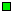
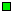

user:aKOxhqX/m=hiP:101:10:Prenom Nom:/home/user:/bin/sh daemon:*:1:1:DAEMON:/:
group:*:10:user1,user2,user3,user4
user:x:101:10:Prenom Nom:/home/user:/bin/sh user:aKOxhqX/m=hiP:::::
  Retour au Plan
Philippe Dax / dax@inf.enst.fr
 Retour au Plan
Philippe Dax / dax@inf.enst.fr